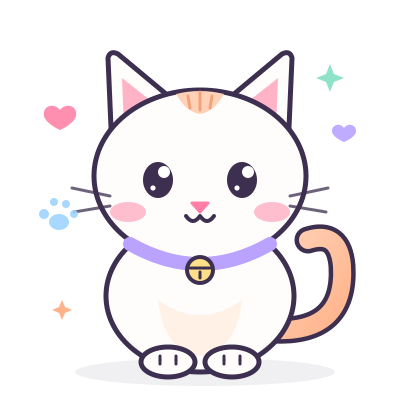

Blog anabul dari Deholic Cattery
Merawat anabul dengan penuh cinta
Di blog Deholic Cattery, kami berbagi catatan seputar dunia kucing — dari perawatan bulu, makanan sehat, hingga memahami tingkah lucu anabul — supaya setiap kucing tumbuh sehat, nyaman, dan bahagia.
- Artikel
- —
- Kategori
- —
- Untuk
- Semua cat lovers

Kedipan pelan = tanda percaya
Air bersih setiap hari
Pilihan kami
Sorotan minggu ini
Arsip
Artikel terbaru
Komunitas
Punya cerita lucu tentang anabulmu?
Kami senang mendengar cerita dari sesama pecinta kucing. Kenali Deholic Cattery lebih dekat dan temukan cara untuk terhubung dengan kami.